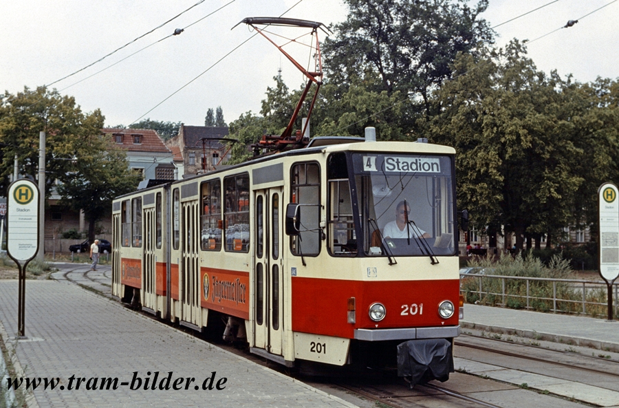
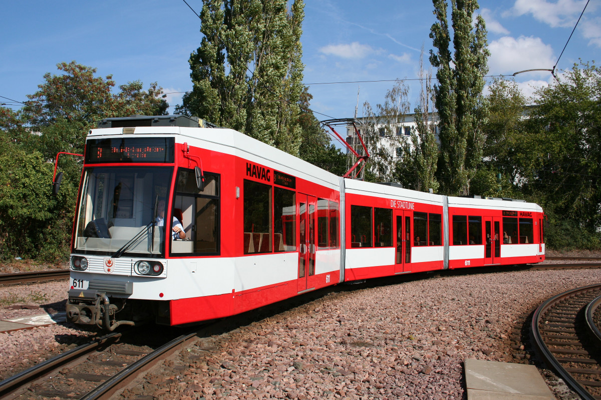
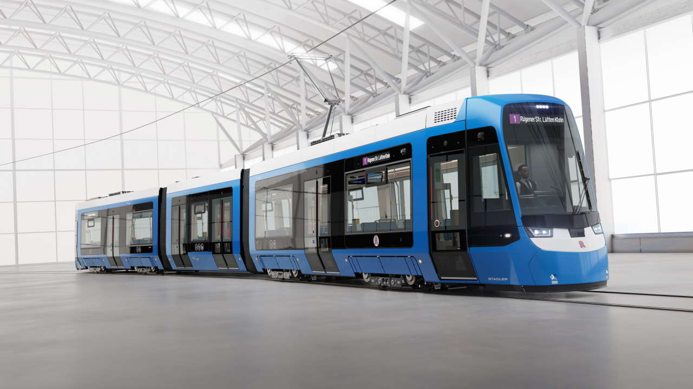

Die Geschichte des ÖPNV in Schwedt begann mit ...
Als Betreiber des öffentlichen Personennahverkehrs in Schwedt besitzen wir eine Vielzahl an unterschiedlichen Fahrzeugen. Mit Stand Ende März 2026 besteht unsere Flotte aus rund 40 Straßenbahnfahrzeugen und circa 60 Stadt- und Regionalbussen.
| Tatra KT4D - das Rückgrat der Flotte | |
| 🚏 Anzahl: 25 Fahrzeuge 🚏 in Betrieb seit 1985 |
 |
| Duewag, AEG MGT6D - das Arbeitstier | |
| 🚏 Anzahl: 10 Fahrzeuge, 2026 werden 5 gebrauchte Wagen aus Halle übernommen 🚏 in Betrieb seit 2000 🚏 Fahrzeug ist komplett Barrierefrei. 🚏 Alle Fahrzeuge sind als Zweirichtungsfahrzeuge ausgelegt. |  |
| Stadler Tina - die Moderne | |
| 🚏 Anzahl: 25 Fahrzeuge sind bestellt, Aktuell im Einsatz: 5 🚏 die Fahrzeuge werden in zwei Unterschiedlichen Längen produziert: 🚋 Tina S (3-Wagen-Fahrzeug) mit einer Länge von 32 Metern. 🚋 Tina XL (5-Wagen-Fahrzeug) mit einer Länge von 45 Metern. Damit ist sie die längste Straßenbahn, die jemals in Schwedt unterwegs war! 🚏 Auslieferung seit 2025 🚏 Fahrzeug ist komplett Barrierefrei und verfügen über eine Klimaanlage. 🚏 Alle Fahrzeuge sind als Zweirichtungsfahrzeuge ausgelegt. |
 |
Du suchst eine Arbeitsplatz, der zu dir passt? Dann bist du hier genau richtig. Im ÖPNV-Zweig der Stadtwerke Schwedt gibt es eine Vielzahl an unterschiedlichen Berufen in diversen Fachbereichen. Egal ob im direkten Kundenkontakt, in der Fahrzeuginstandhaltung, in der Betriebsplanung oder der Verwaltung. Du findest bei uns genau den Job, der für dich bestimmt ist. Bweirb dich einfach online über unser Bewerbungsportal. Wir freuen uns auf dich!
Fachkraft im Fahrbetrieb, Straßenbahnen (m/w/d)
Fachkraft im Fahrbetrieb, Beruftskraftfahrer/ Bus (m/w/d)
Fachkraft im Fahrbetrieb, Beruftskraftfahrer/ Bus und Straßenbahnen (m/w/d)
Mechatroniker Kraftfahrzeuge (m/w/d)
Mechatroniker Schienenfahrzeuge (m/w/d)
Mitarbeiter Fahrzeugservice (m/w/d)
Mitarbeiter Controling (m/w/d)